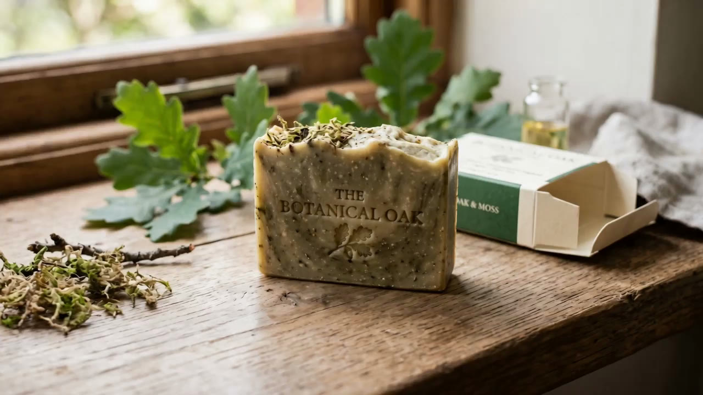
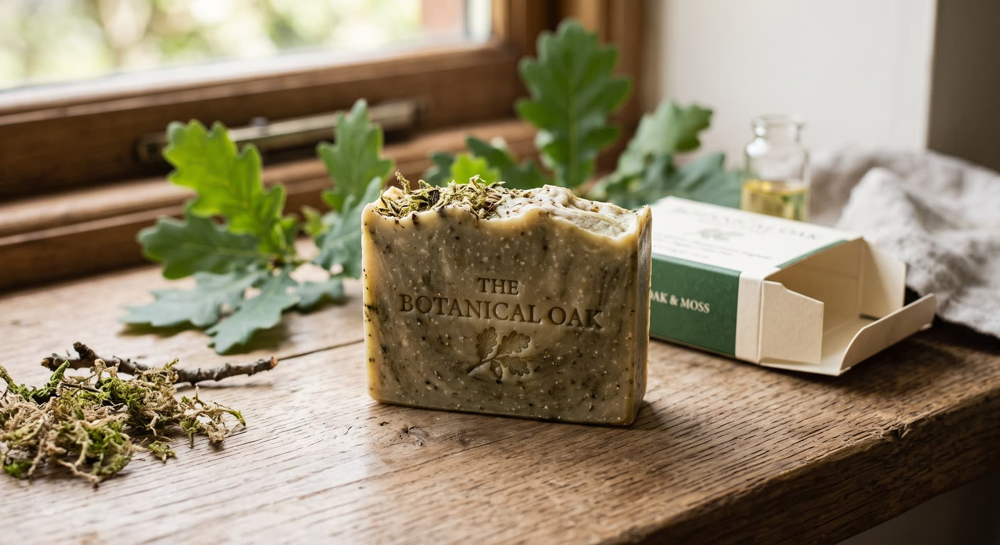
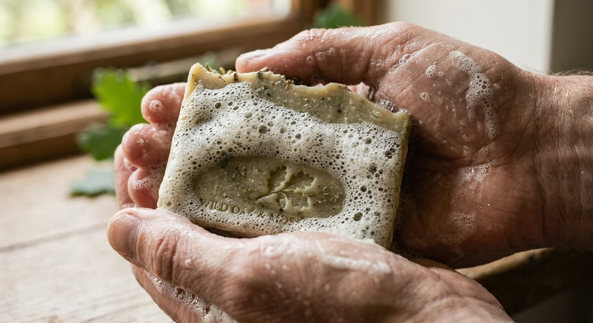
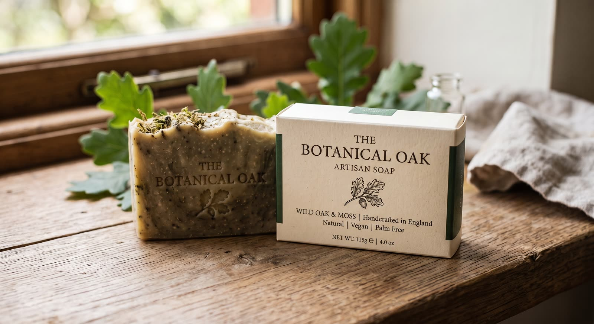
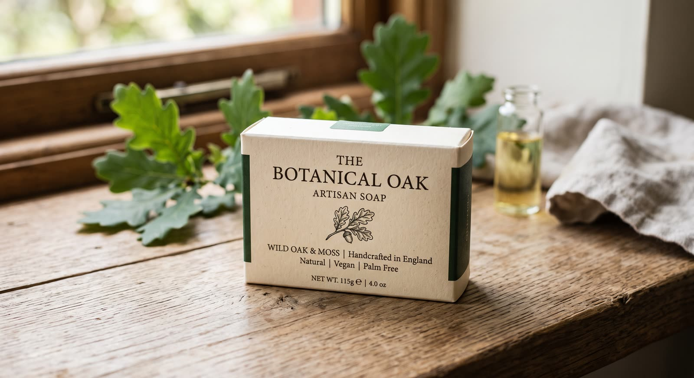
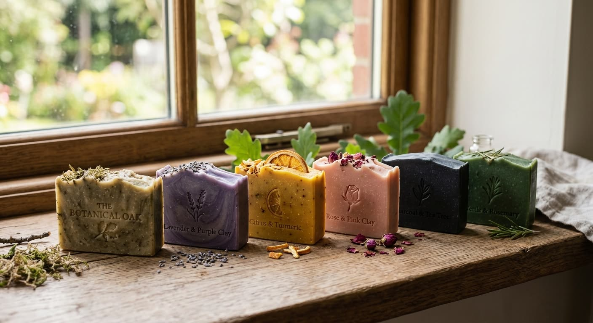

Saponify
Cold process, never heated. Olive, coconut and shea are stirred with lye at room temperature and poured thick into oak molds — the slow way, the way that keeps the glycerin in the bar instead of selling it off.

Small batch · Handcrafted in California
Wild oak & moss. A cold-process bar,
cured six weeks in open air.
Our whole catalog
We make one bar. We make it slowly. Olive, shea and coconut oils saponified by hand, folded through oakmoss and wild nettle, then left on open racks for six weeks until it rings hard as timber.




Cold process, never heated. Olive, coconut and shea are stirred with lye at room temperature and poured thick into oak molds — the slow way, the way that keeps the glycerin in the bar instead of selling it off.
Oakmoss absolute and cedarwood, wild nettle cut from the fence line, a spoon of kaolin clay for slip. Nothing synthetic goes in, which is why the color shifts a little from batch to batch.
Six weeks on open racks in a cold room. Water leaves, the bar hardens, the scent settles. A cured bar lasts roughly three times as long as a supermarket one — that's the whole trick.
Hand-stamped, hand-wrapped in recycled board printed with soy ink. No plastic, no cellophane, no insert you'll throw away. Put the carton in the compost when you're done.
The finished bar
4 oz / 115 g — about ten weeks of daily use, if you let it dry between showers.
The tell
Dense, low and slow to break. A bar full of glycerin won't foam up big and airy the way detergent does — it draws down close to the skin and stays there. Rinse it off and your hands feel soft rather than squeaky.
Inside the bar
The body of the bar. Mild, conditioning, unhurried.
Unrefined, for the creaminess that survives a cure.
Hardness, and the first flush of lather.
Damp bark and forest floor. The whole point.
Dry, resinous, holds the oakmoss down.
Cut wild along the fence line, dried, folded through the top.
Slip under the razor, and a gentle polish.
For skin that argues with everything else.
Stories
Tap a clip for sound.
Next off the racks
The oak bar was the first. Five more are on the racks behind it — same cold process, same six-week cure, same eight-line ingredient list. Different forests to walk through.

Cut at dusk. The one to wash with when you are trying to stop thinking.
Peel and root. Sharp first thing, and it stains the lather gold.
Soft and powdery, the mildest of the six. Made for faces.
Binchotan and tea tree. The one to reach for after a filthy job.
Both picked within a mile of the workshop. Green the whole way through.
Curing takes six weeks and we will not rush it. If you want to know the moment a batch comes down, the workshop will tell you.
Ask about a scentInquiries
This is a showcase, not a store — nothing is sold from these pages. If you want a bar, carry the line in your store, or just have a question about what goes in it, write to us and a person will answer.
hello@thebotanicaloak.com